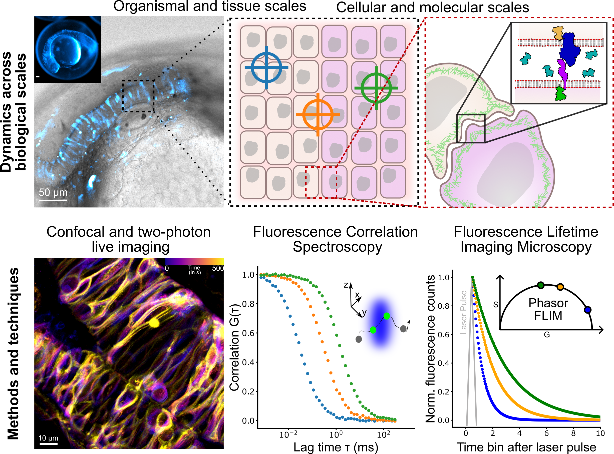

How does molecular organisation control tissue-scale function?
and
How do we measure that?

Summary
In the Fluorescence and Membrane Dynamics (FMD) Lab, we investigate how molecular motions and interactions give rise to complex organisation and function. Our research spans model systems of varying complexity. We work with artificial membranes with reconstituted proteins, cultured cells, and zebrafish embryos, enabling us to study dynamics across different biological scales. While in vitro systems provide a high degree of control, the physiological context of an organism offers unchallenged insights into the role of the native environment.Our primary tools are based on advanced fluorescence microscopy. We develop and apply fluorescence correlation spectroscopy (FCS) and fluorescence lifetime imaging microscopy (FLIM) methods to make every photon count. Increasing sensitivity and specificity is especially important in deep tissue imaging. Currently, the lab focuses on studying the mechanisms underlying zebrafish hindbrain development, establishing methods to link nanometre-scale molecular dynamics, cellular signalling, and tissue-scale mechanics. Furthermore, we are developing a growing interst in probing metabolic changes using FLIM.
Key questions include:
1. How are lipid and receptor mobility in the plasma membrane influenced by tissue-scale mechanics?
2. How is the extracellular space organised, and how does it affect ligand delivery to membrane-bound receptors?
3. How are biophysical properties contributing to cellular identity within the tissue?
By bridging scales and developing cutting-edge fluorescence techniques and probes, the FMD Lab aims to uncover the fundamental biophysical organising principles that underpin complex biological systems and phenomena.